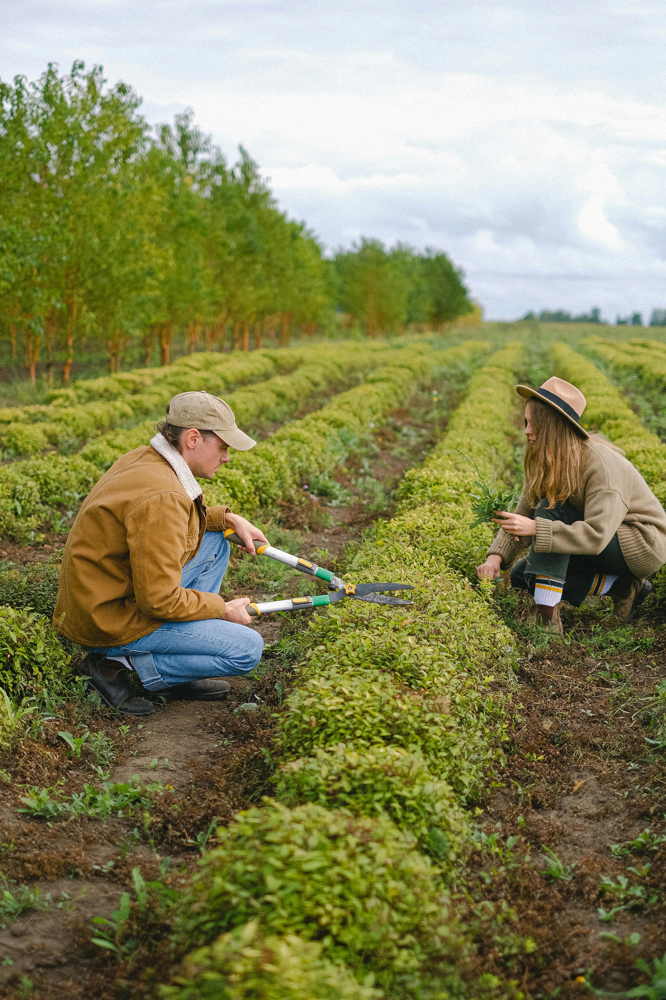

About us
Based in Tuscon, Arizona, Lucky Shrub is a medium-sized garden design firm that specializes in garden design and creation, maintenance and landscaping. The company also runs a small plant nursery that sells indoor and outdoor plants, making them a one-stop shop for clients to "transform any space into an oasis you can be proud of". Lucky Shrub was started by a husband and wife team, Jason and Maria, who share a long-time love for plants. Jason is the garden architect. He creates and oversees all designs while managing his team of landscapers. Maria manages all the marketing for the company and oversees the nursery.